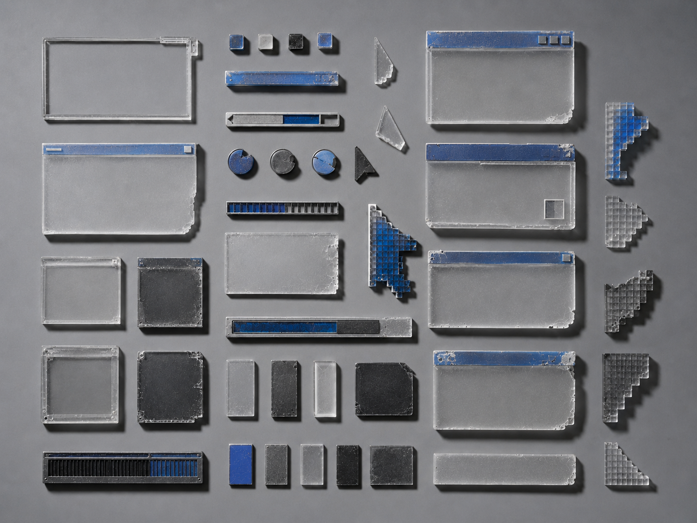
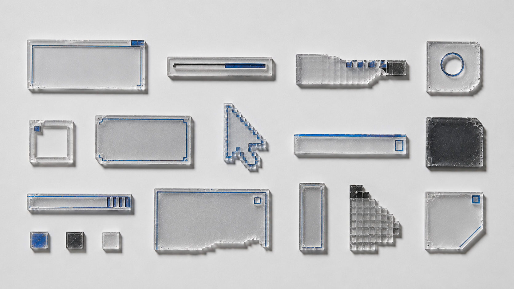
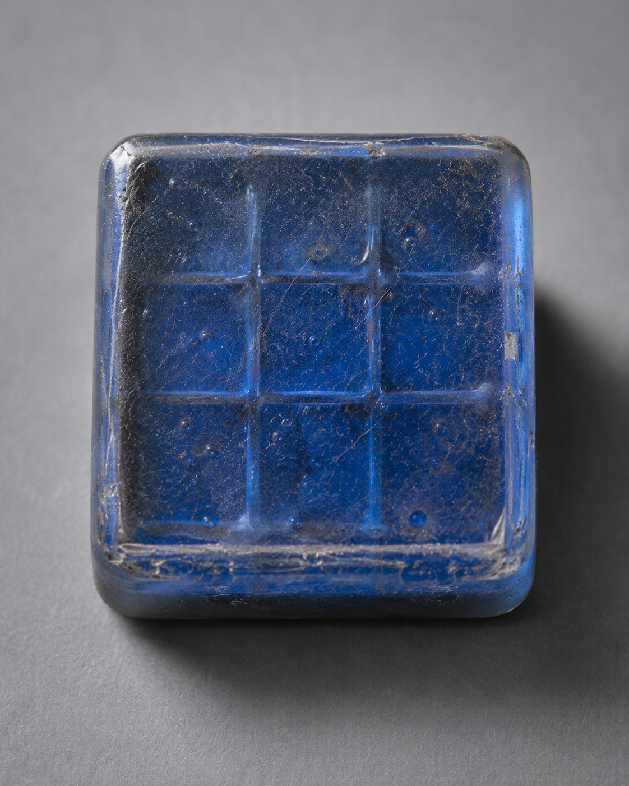
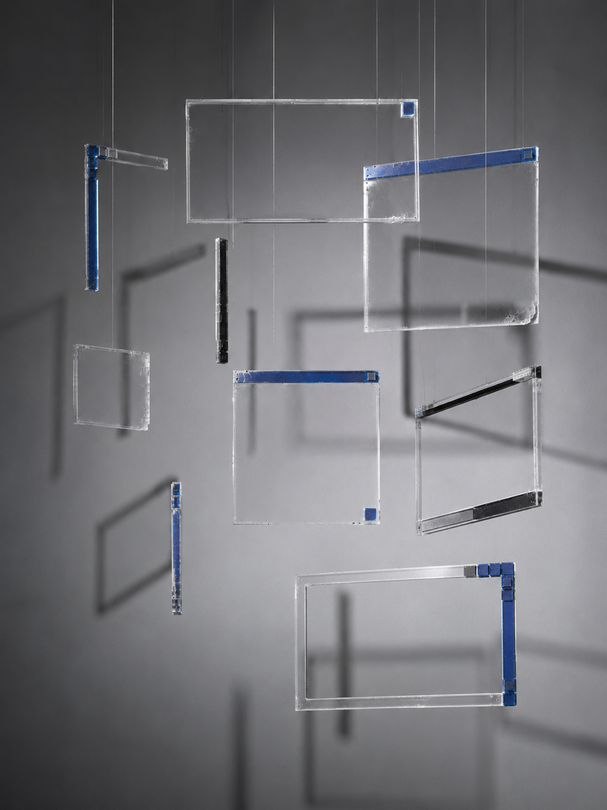
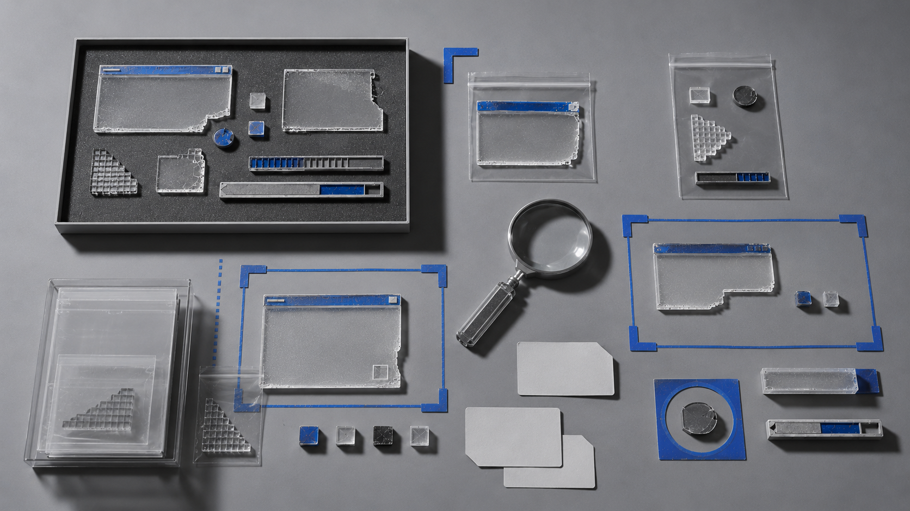

视觉方法 / PROCESS
记录组件拆解、比例校准与分类规则的形成，展示系统如何逐步建立。
A09 · SYSTEM
界面遗物
将失效界面组件转化为可陈列、测量与分类的数字遗物系统。

“A09 INTERFACE RELICS｜界面遗物”属于“SYSTEM｜视觉系统实验”。项目将按钮、窗口、游标、加载条与提示框从操作环境中剥离，视作失去功能的数字遗物；通过重绘、分层、尺度校准与编号归档，将其转化为可陈列、测量和比较的视觉样本。最终形成介于界面规范、标本图录与展示装置之间的系统，用以讨论功能消失后，数字形式如何保留秩序、记忆与使用痕迹。
记录组件拆解、比例校准与分类规则的形成，展示系统如何逐步建立。
先从常见界面组件中提取轮廓、边界和状态差异，再统一它们的尺度与编号。制作过程中，刻意保留了部分重复、断裂与失效提示。后续仍可继续补充新的组件类型，并调整分类规则。



